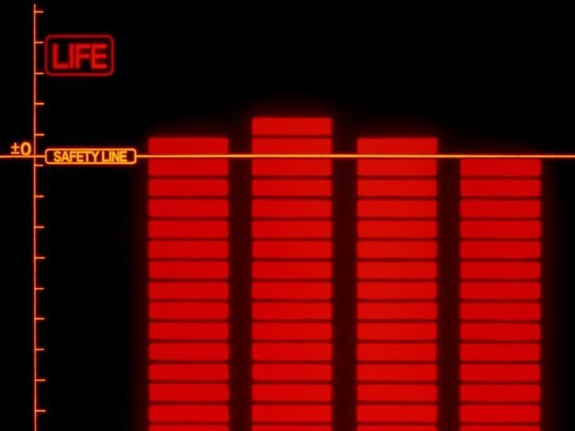
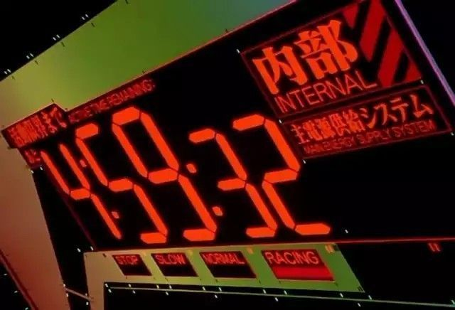
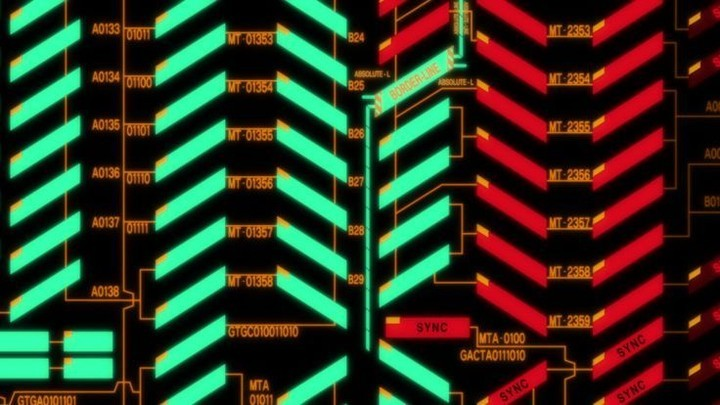
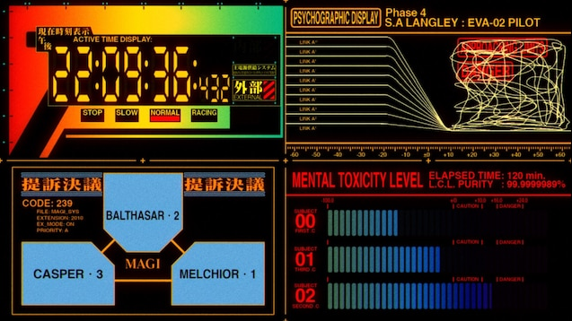
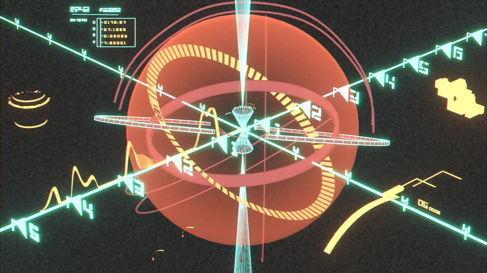

WORKFLOW OSCILLATIONTRACE / 04
Personal operations interface · 2026
Human
signal
machine
Ben Ashley is a full-stack developer building useful systems across web, machine learning, tooling, and graphics. This terminal presents active work as a readable field of signals.
Directory
PROJECT RECORDS / SELECT A CHANNEL TO INSPECT SOURCE AND BUILD NOTES.
REC / 01 · ML VISION
chess-vision
App that detects chess pieces with ML and runs Stockfish for evaluation and best move.
REC / 02 · WEB SYSTEMfdi-headless
Headless WordPress and Next.js test site with verified SSH staging CI/CD
REC / 03 · GRAPHICSopengl-engine
Custom game engine with GLSL, CMake and C++
REC / 04 · CONFIGdotfiles
My personal Arch Linux dotfiles for coding and desktop config
Systems
STATUS IS A LANGUAGE. EACH GRAPHIC IS A SMALL, EXPLAINED SIGNAL IN THE FIELD.
SYNC PARAMETERSLIVE
FRONT END72%
TOOLING61%
GRAPHICS48%
Statuses are interface treatment, not performance claims.
Reference Archive
VISUAL RESEARCH / SUPPLIED NGE INTERFACE STUDIES · SELECTED FOR GRID, SIGNAL, AND HAZARD LANGUAGE.





External Signals
OUTBOUND PORTS / CONTINUE THE CONVERSATION THROUGH THE CHANNEL THAT FITS.